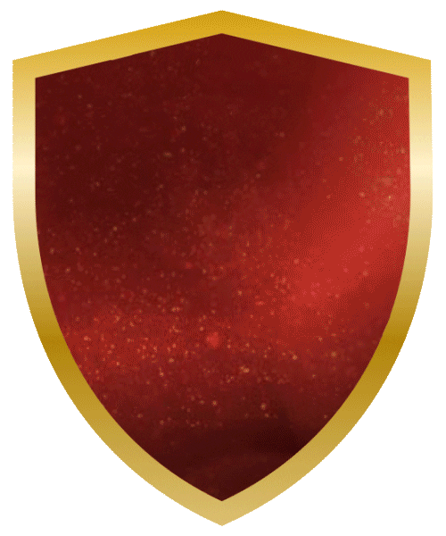

Gryffindor
- Hogwarts students who are sorted into Gryffindor House are known to be brave, courageous, daring, and determined. Its crest depicts a lion’s head, and its colors are gold and scarlet.
- The House is named after Godric Gryffindor, one of the four founders of Hogwarts. He was a huge proponent for the right of muggle-born witches and wizards to attend Hogwarts.
- “You might belong in Gryffindor, where dwell the brave at heart, their daring, nerve, and chivalry, set Gryffindors apart"
Noteable Witches & Wizards
